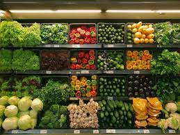

Our Story: Cultivating Fresh Connections
Welcome to FreshHarvest Grocers, where our story is as vibrant as the produce we proudly showcase. Our journey began with a shared passion for quality, sustainability, and the simple joy of good food.

At FreshHarvest, we believe that good food is the foundation of a vibrant life.
Welcome to FreshHarvest Grocers, where our story is as vibrant as the produce we proudly showcase. Our journey began with a shared passion for quality, sustainability, and the simple joy of good food.
FreshHarvest was seeded by a group of local farmers and food enthusiasts who envisioned a place where community and nourishment intersect. What started as a dream in a small neighborhood has blossomed into a thriving grocery store committed to supporting local producers and connecting you with the freshest, seasonal bounty.